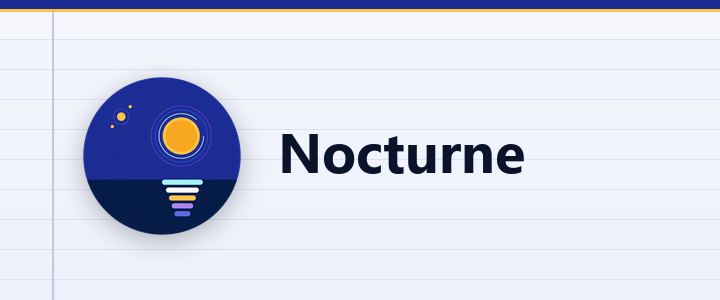

הערות כקבצים פשוטים, בתיקיות פשוטות.
Nocturne שומר הערות כמו שאתם שומרים קבצים: מחברת היא תיקייה, מקטע הוא תיקייה, ועמוד הוא תיקייה עם קובץ אחד והתמונות שלו. שום דבר לא נעול במסד נתונים, ולכן כל תיקייה שכלי הסנכרון שלכם כבר עוקב אחריה הופכת למחברת מסונכרנת, וגיבוי הוא עותק.
כל עמוד במקטע הזה מציג חלק אחד של Nocturne, על העמוד עצמו:
לחצו בכל מקום בפסקה הזאת והקלידו. העמוד נשמר מעצמו כשנייה אחרי שהפסקתם. הקישו Enter בסוף השורה לפסקה חדשה, ו-Escape כדי לצאת ממנה.
חזרה אל עמוד ההתחלה.
העמוד הזה תורגם על ידי מודל בינה מלאכותית. תיקונים יתקבלו בברכה.